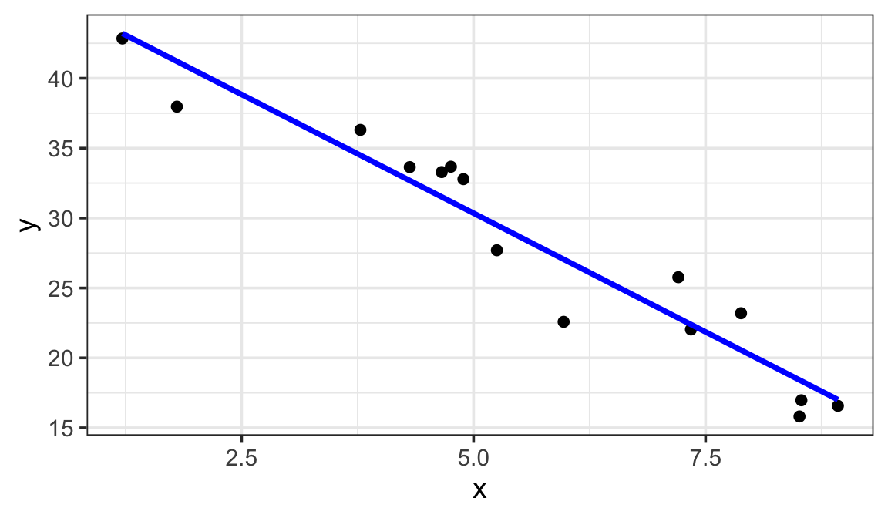
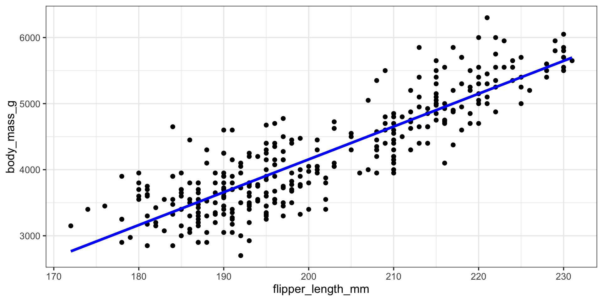
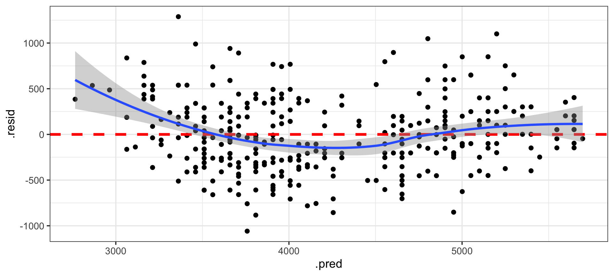
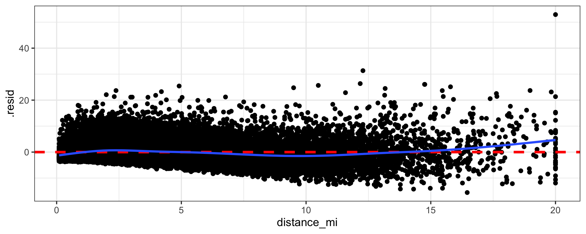

Simple Linear Regression
November 25, 2026
The Highlights
- What is simple linear regression?
The Statistical Learning Setting
- Can we hypothesize a linear association and test it?
- Are the assumptions for linear regression reasonable?
- What do the slope and intercept tell us?
- Where does the model stop being trustworthy?
The Machine Learning Setting
- Why do we split our data?
- How well does a simple model predict, on data it has and hasn’t seen?
- What do the residuals reveal about where the model struggles?
- What is the benchmark that future models need to beat?
Note: The {tidymodels} code is nearly identical in the two settings. What changes is our goal, and the data we use to judge the model.
What Is Simple Linear Regression?
In simple linear regression, we seek to explain/predict a numerical outcome (y), given a single numerical explanatory/predictor variable (x).
Our models are of the form:
\[\mathbb{E}\left[y\right] = \beta_0 + \beta_1 x\]
The model forms a straight line, where
- \(\beta_0\) is the expected value of
ywhenxis 0 (they-intercept), and - \(\beta_1\) is the expected change in
ygiven a unit increase inx(the slope).

We’ll begin in the statistical learning setting before exploring simple linear regression in the machine learning setting.
Statistical Learning Reminders
We’ve defined the statistical learning setting to be one where we come to our modeling scenarios with a pre-determined model form and our primary goal is inference (interpretation).
The Data: We’re using data collected on penguins observed near Palmer Research Station in Antarctica.
| species | island | bill_length_mm | bill_depth_mm | flipper_length_mm | body_mass_g | sex | year |
|---|---|---|---|---|---|---|---|
| Adelie | Torgersen | 39.1 | 18.7 | 181 | 3750 | male | 2007 |
| Adelie | Torgersen | 39.5 | 17.4 | 186 | 3800 | female | 2007 |
| Adelie | Torgersen | 40.3 | 18.0 | 195 | 3250 | female | 2007 |
| Adelie | Torgersen | NA | NA | NA | NA | NA | 2007 |
| Adelie | Torgersen | 36.7 | 19.3 | 193 | 3450 | female | 2007 |
| Adelie | Torgersen | 39.3 | 20.6 | 190 | 3650 | male | 2007 |
Objective: We’re seeking to understand how penguin body mass is related to physiological, spatial, and temporal explanatory variables.
Limitation: We’re going to make heavy use of this data set over the course of our semester, proposing different model structures at each class meeting. As a reminder, this choice is made for convenience of not needing to understand a new data set at each class meeting. When approaching a statistical learning project, a researcher should have a singular model structure in mind, designed to test hypotheses about associations between their outcome and explanatory variables.
Hypotheses and Corresponding Model
Hypotheses: We believe that penguin body mass (body_mass_g) is linearly related to penguin flipper length (flipper_length_mm). Intuitively, we suspect that penguins with longer flippers have greater body mass, on average.
Corresponding Model: The following model encodes the primary hypothesis.
\[\mathbb{E}\left[\text{body mass}\right] = \beta_0 + \beta_1\cdot\left(\text{flipper length}\right)\]
Resulting Null and Alternative Hypotheses: The following null and alternative hypotheses relate to the research question:
\[\begin{array}{l} H_0: \beta_1 = 0\\ H_a: \beta_1\neq 0\end{array}\]
As long as \(\beta_1 \neq 0\), then our model suggests that flipper length and body mass are linearly associated.
Our intuition leads us to believe that \(\beta_1\) should be positive.
Note: For simple linear regression, the Global Test for Model Utility and the Term-Based Test are identical since there is only one variable term.
Fitting and Assessing the Model
With our model form proposed and our hypotheses set, we’re ready to construct the model
We’ll use the {tidymodels} framework for this.
With the model fit, we’ll look at the global performance metrics and the term-based output as well.
Both sets of output indicate that the model has explanatory value and that flipper length has a linear association with penguin body mass.
Before reading too much into this, let’s verify that the assumptions for linear regression are at least approximately satisfied.
Validating Model Assumptions
With our model fit, and significance tested, let’s validate the assumptions accompanying linear regression.
As a reminder, those assumptions are:
- Linearity (between flipper length and body mass)
- Independence of residuals
- Homoskedasticity (constant variance of residuals)
- Normality of residuals
The linear model seems to fit the data well.
We’ll look at a plot of the residuals against the explanatory variable to confirm.
Linearity:
min_flipper <- min(penguins$flipper_length_mm, na.rm = TRUE)
max_flipper <- max(penguins$flipper_length_mm, na.rm = TRUE)
plot_vals <- tibble(
flipper_length_mm = seq(min_flipper,
max_flipper,
length.out = 250)
)
plot_vals <- lr_fit |>
augment(plot_vals)
ggplot() +
geom_point(data = penguins,
aes(x = flipper_length_mm,
y = body_mass_g)) +
geom_line(data = plot_vals,
aes(x = flipper_length_mm, y = .pred),
color = "blue")
Validating Model Assumptions
With our model fit, and significance tested, let’s validate the assumptions accompanying linear regression.
As a reminder, those assumptions are:
- Linearity (between flipper length and body mass)
- Independence of residuals
- Homoskedasticity (constant variance of residuals)
- Normality of residuals
The linear model seems to fit the data well.
We’ll look at a plot of the residuals against the explanatory variable to confirm.
There is some evidence of a slight violation with penguins of the shortest flipper lengths. These may be high leverage observations.
Linearity:
Validating Model Assumptions
With our model fit, and significance tested, let’s validate the assumptions accompanying linear regression.
As a reminder, those assumptions are:
- Linearity (between flipper length and body mass)
- Independence of residuals
- Homoskedasticity (constant variance of residuals)
- Normality of residuals
Independence of Residuals:
Independence of residuals is generally about how the data were collected or generated.
The following items could affect independence of the residuals:
- observations collected at different times
- observations collected at different locations
- observations collected on different subgroups within the population
Actually, each of those things is a potential issue with this particular model and data set combination. They’ll need to be accounted for by a more inclusive model.
For now, we’ll leave this alone and move on.
Validating Model Assumptions
With our model fit, and significance tested, let’s validate the assumptions accompanying linear regression.
As a reminder, those assumptions are:
- Linearity (between flipper length and body mass)
- Independence of residuals
- Homoskedasticity (constant variance of residuals)
- Normality of residuals
Homoskedasticity:

The plot here is no different than the residual plot we used to investigate linearity. This will always be the case with simple linear regression.
A faint bow-tie shape is present. Constant variance is not severely violated, but variability seems tighter for penguins with predicted body masses between 4200g and 4400g – though there aren’t many penguins in this range.
Validating Model Assumptions
With our model fit, and significance tested, let’s validate the assumptions accompanying linear regression.
As a reminder, those assumptions are:
- Linearity (between flipper length and body mass)
- Independence of residuals
- Homoskedasticity (constant variance of residuals)
- Normality of residuals
The residuals look to be approximately normal. The histogram shows approximate normality and the QQ-plot doesn’t show substantial deviation from the theoretical quantiles (red line).
Normality of Residuals:
Summary of Assumption Validation
We admitted that there are likely violations of the independence of residuals assumption due to when and where the observations were collected.
We decided to punt on this for now though, because we don’t have the tools to address the dependencies yet.
None of the other assumptions for linear regression were wildly violated. However we did find some evidence for minor violations of linearity and homoskedasticity (constant variance of residuals).
For linearity, we observed a slight violation for those penguins with the shortest flippers. The line tends to underpredict for these observations and we have very few penguins in that region.
For constant variance, there were very few penguins of moderate masses (4200g to 4400g) and the variability of the residuals through this segment seemed smaller than for penguins of smaller or larger masses.
We didn’t find evidence for severe violations, so we can trust our statistical analysis as long as we maintain some level of skepticism.
Interpreting the Model
We didn’t find evidence for severe violations, so we can trust our statistical analysis as long as we maintain some level of skepticism.
| r.squared | adj.r.squared | sigma | statistic | p.value | df | logLik | AIC | BIC | deviance | df.residual | nobs |
|---|---|---|---|---|---|---|---|---|---|---|---|
| 0.7589925 | 0.7582837 | 394.2782 | 1070.745 | 0 | 1 | -2528.427 | 5062.855 | 5074.359 | 52854796 | 340 | 342 |
The F-statistic and corresponding p-value indicate that our model has explanatory value.
The R-squared value indicates that approximately 75.9% of the variability in penguin body masses is explained by a linear relationship with flipper length.
The sigma value indicates that our typical residual (prediction error) is approximately 394.3 grams.
| term | estimate | std.error | statistic | p.value | conf.low | conf.high |
|---|---|---|---|---|---|---|
| (Intercept) | -5780.83136 | 305.814504 | -18.90306 | 0 | -6382.35801 | -5179.30471 |
| flipper_length_mm | 49.68557 | 1.518404 | 32.72223 | 0 | 46.69892 | 52.67221 |
The estimated model is:
\[\mathbb{E}\left[\text{body mass}\right] \approx -5780.8 + 49.7\cdot\left(\text{flipper length}\right)\]
Intercept: An interpretation of the intercept here would be meaningless, since it would correspond to the body mass of a penguin with a 0mm flipper length.
Note that, even if it made physical sense, the data supporting the model cannot justify such an interpretation because no penguins with such short flippers (or no flippers) were part of the observed data. Making or interpreting predictions beyond the range of observed training data is known as extrapolation and is unreliable.
Flipper Length: We expect a one millimeter increase in flipper length to be associated with an increase in average body mass by about 49.7g. The 95% confidence bounds indicate that the increase is between 46.7g and 52.7g.
This association matches our initial expectation of longer flippers being associated with more massive penguins.
Your Turn!
If time permits, repeat this entire line of inquiry using penguin bill depth (bill_depth_mm) to explain penguin body mass (body_mass_g). Note that bill depth is a “top-to-bottom” measurement, as opposed to bill length.
- Make a hypothesis about the association between penguin body mass and bill depth. What does intuition tell you about that relationship? Why?
- Write out the model form that allows you to test your hypothesis.
- Write out the formal hypotheses associated with the model.
- Fit and assess the model.
- Validate the assumptions.
- Interpret the results and check them against your intuition.
Can you think of any reasons you might be observing the results you are?
Machine Learning Reminders
We’ve defined the machine learning setting to be one where we come to our modeling scenarios from an exploratory standpoint and where our primary goal is prediction.
The Data: We’re using data collected on emergency medical response times.
| call_id | call_datetime | year | month | day_of_week | hour | is_weekend | is_holiday | event_day | station_id | staffing_model | station_units | zone | road_type | call_type | priority | distance_mi | temp_f | precip_type | precip_mm_hr | visibility_mi | traffic_index | active_incidents | units_available | short_crew | dispatch_sec | turnout_sec | travel_min | response_time_min |
|---|---|---|---|---|---|---|---|---|---|---|---|---|---|---|---|---|---|---|---|---|---|---|---|---|---|---|---|---|
| C000001 | 2023-01-01 00:12:16 | 2023 | 1 | Sun | 0 | 1 | 1 | 0 | S08 | combination | 2 | suburban | local | trauma_mva | 1 | 2.27 | 24.6 | none | 0 | 10 | 0.223 | 3 | 2 | 0 | 39 | 110 | 5.40 | 7.88 |
| C000002 | 2023-01-01 00:29:14 | 2023 | 1 | Sun | 0 | 1 | 1 | 0 | S05 | combination | 3 | suburban | arterial | respiratory | 2 | 0.58 | 21.6 | none | 0 | 10 | 0.163 | 3 | 1 | 0 | 46 | 197 | 1.92 | 5.97 |
| C000003 | 2023-01-01 01:36:49 | 2023 | 1 | Sun | 1 | 1 | 1 | 0 | S09 | on_call | 2 | rural | highway | fall_injury | 3 | 4.61 | 20.8 | none | 0 | 10 | 0.053 | 1 | 2 | 1 | 112 | 388 | 8.03 | 16.36 |
Objective: We’re seeking to predict how long an EMS team will take to arrive on the scene of an emergency, from the instant a 911 call is placed.
A Note on Approach: Simple linear regression is not a technique which is typically applied in a machine learning setting because its predictive power is quite weak. Machine learning scenarios generally demand models which can account for more predictors and can approximate more complex relationships.
We’ll still build and assess a simple linear regression model here, for the following reasons:
- Doing so allows us to build intuition for how we approach modeling in a machine learning setting.
- A simple linear regression model can provide an initial performance benchmark which we’ll seek to improve upon with future models.
Training, Validation, and Test Data
Why Splitting Data Is Necessary:
- We come to these machine learning settings without pre-determined hypotheses or a model form.
- The data will inform the choices we make, the models we build, and our expectations for future model performance.
- This leaves us susceptible to (i) fitting “relationships” that are just noise, and (ii) having overly optimistic expectations about future predictive performance.
Because of this, we’ll need some data to explore and learn from (the training data) and other data to validate our models, inform how to tweak the model structure, and to test the performance of our final model (the validation and test data).
Training, Validation, and Test Data
We’ll need some data to explore and learn from (the training data) and other data to validate our models, inform how to tweak the model structure, and to test the performance of our final model (the validation and test data).
The basic intuition for what we’re about to do is…
Treat all your available data like a deck of cards, where each row is a card.
Deal cards randomly among three piles – a large pile for
training, a smaller pile forvalidation, and the smallest pile for a finaltest.- There is no set size for how much of your data should go into training, validation, or testing.
- The final
testset should be small because you never get to learn from those observations – it should be large enough that your final performance assessment is trustworthy though. - A general approach is to start with 75% of observations for training, 15% for validation, and 10% for testing.
- The more observations you have though, the smaller the percentages you need to reserve for testing and validation.
| call_id | call_datetime | year | month | day_of_week | hour | is_weekend | is_holiday | event_day | station_id | staffing_model | station_units | zone | road_type | call_type | priority | distance_mi | temp_f | precip_type | precip_mm_hr | visibility_mi | traffic_index | active_incidents | units_available | short_crew | dispatch_sec | turnout_sec | travel_min | response_time_min |
|---|---|---|---|---|---|---|---|---|---|---|---|---|---|---|---|---|---|---|---|---|---|---|---|---|---|---|---|---|
| C000002 | 2023-01-01 00:29:14 | 2023 | 1 | Sun | 0 | 1 | 1 | 0 | S05 | combination | 3 | suburban | arterial | respiratory | 2 | 0.58 | 21.6 | none | 0 | 10 | 0.163 | 3 | 1 | 0 | 46 | 197 | 1.92 | 5.97 |
| C000003 | 2023-01-01 01:36:49 | 2023 | 1 | Sun | 1 | 1 | 1 | 0 | S09 | on_call | 2 | rural | highway | fall_injury | 3 | 4.61 | 20.8 | none | 0 | 10 | 0.053 | 1 | 2 | 1 | 112 | 388 | 8.03 | 16.36 |
| C000004 | 2023-01-01 02:09:34 | 2023 | 1 | Sun | 2 | 1 | 1 | 0 | S04 | career | 3 | urban | highway | trauma_mva | 3 | 2.50 | 21.6 | none | 0 | 10 | 0.257 | 0 | 3 | 0 | 153 | 116 | 4.39 | 8.87 |
| C000005 | 2023-01-01 02:12:05 | 2023 | 1 | Sun | 2 | 1 | 1 | 0 | S05 | combination | 3 | suburban | highway | illness_other | 3 | 2.20 | 21.6 | none | 0 | 10 | 0.195 | 1 | 3 | 1 | 77 | 222 | 4.16 | 9.14 |
| C000006 | 2023-01-01 02:35:21 | 2023 | 1 | Sun | 2 | 1 | 1 | 0 | S01 | career | 4 | urban | arterial | respiratory | 2 | 0.77 | 20.4 | none | 0 | 10 | 0.338 | 0 | 4 | 1 | 53 | 123 | 2.26 | 5.19 |
| C000009 | 2023-01-01 03:16:00 | 2023 | 1 | Sun | 3 | 1 | 1 | 0 | S02 | career | 4 | urban | arterial | trauma_mva | 1 | 0.93 | 18.2 | none | 0 | 10 | 0.267 | 1 | 3 | 1 | 61 | 78 | 2.74 | 5.06 |
EDA and Training Data
The training data is the data that we get to explore and learn from.
An important part of this is exploratory data analysis (EDA), where we investigate numerical and graphical summaries of our data.
It’s important that we only conduct EDA on our training set because, otherwise, information from the validation and/or test sets leak into the modeling process and our performance estimates become biased.
In the interest of time, we’ll skip EDA and simply refer back to the knowledge we gained from conducting EDA on the smaller emergency response data set from earlier this semester.
A Simple Linear Regression Model
Just like with EDA, we only get to learn from our training data. This goes for our models as well.
We’ll still use our same {tidymodels} workflow, but we’ll make use of the training set instead of the full data set.
We’ll use distance (distance_mi) as the sole predictor of total response time (response_time_min).
As expected, our training and validation metrics are similar to one another, and the performance on the validation set is slightly worse.
We should expect the typical prediction error from this model to be about 2.4 minutes (2 minutes and 24 seconds).
Now that we’ve got our fitted model, let’s compare training and validation performance.
As a reminder, if the model is fit appropriately, the training and validation metrics should be similar (though we expect the validation performance to be somewhat worse).
Examining Performance
We just fit a model of the form:
\[\mathbb{E}\left[\text{response time}\right] = \beta_0 + \beta_1 \cdot\left(\text{distance}\right)\]
We assessed that model’s performance on the training and validation sets, discovering that our typical prediction error is expected to be about 2 minutes and 24 seconds.
That claim is only valid to apply across all distances (for creating confidence or prediction intervals) as long as the constant variance assumption (homoskedasticity) is satisfied.

Examining Performance
We just fit a model of the form:
\[\mathbb{E}\left[\text{response time}\right] = \beta_0 + \beta_1 \cdot\left(\text{distance}\right)\]
We assessed that model’s performance on the training and validation sets, discovering that our typical prediction error is expected to be about 2 minutes and 24 seconds.
That claim is only valid to apply across all distances (for creating confidence or prediction intervals) as long as the constant variance assumption (homoskedasticity) is satisfied.


There are some visible issues in the residual plots above, indicating that we’ve got some work to do before we have a model whose predictions (and our expectations) we can trust.
For now, we’ll leave this discussion by simply saying that the validation RMSE of 2.4 minutes is currently the benchmark for us to beat with future models.
Summary
Simple linear regression models a numerical response using a single numerical predictor, through a straight line with an intercept (\(\beta_0\)) and a slope (\(\beta_1\)).
In the statistical learning setting, we began with a hypothesis about penguin flipper length and body mass, fit the model, and checked the assumptions before reading the results. We estimated that each additional millimeter of flipper length is associated with about 49.7g more body mass, on average. Independence was a concern, so we treat our p-value and interval with some skepticism. The intercept was meaningless, and predicting outside the observed flipper lengths would be extrapolation.
In the machine learning setting, we split the EMS data, fit a model for response time using distance on the training set, and compared training and validation RMSE. Our typical prediction error was about 2.4 minutes, but the residuals showed us that the model has room for improvement.
The model construction code was the same in both settings. The difference is the question we’re asking and the data we use to answer it.
The benchmark: A validation RMSE of about 2.4 minutes is the number future models will need to beat.